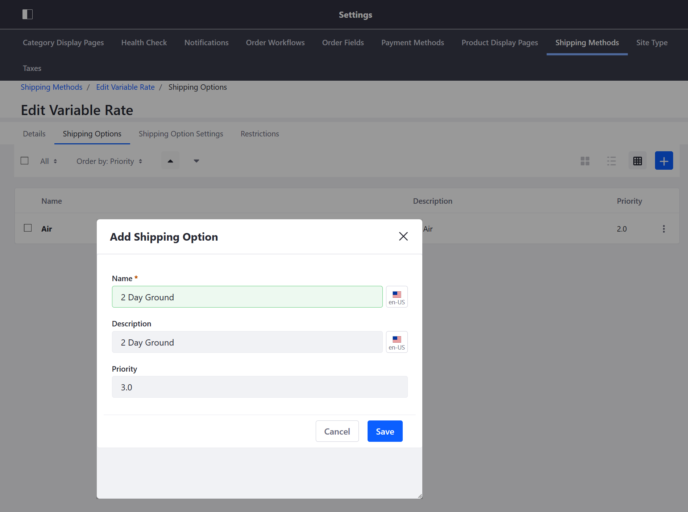
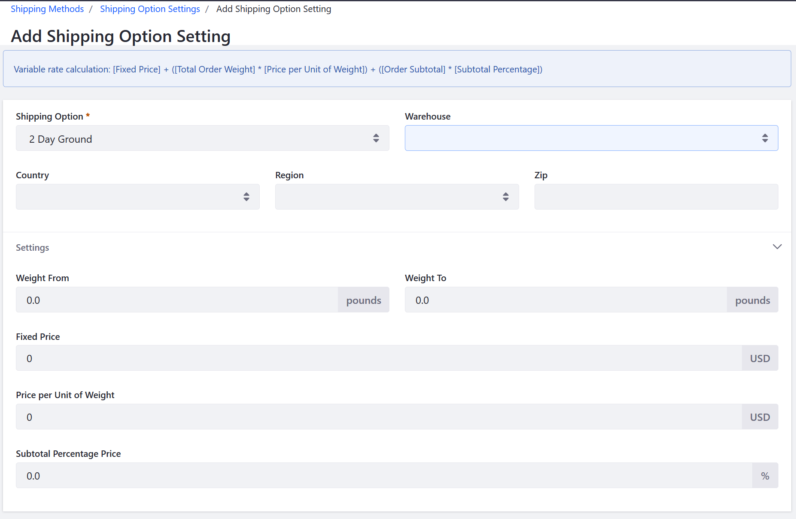

Using the Variable Rate Shipping Method¶
Variable rate shipping allows shipping costs to be calculated using three factors: weight, order subtotal (cost before shipping, taxes, and discounts), and a configurable flat rate. The store administrator may configure the weighting of each factor in the shipping calculation.
Multiple different shipping options with variable rates may be created. For example, a 『Standard Ground』 option with a low cost per weight can be created. In contrast, a “Two-Day Air” option can be created that uses the same logic as 『Standard Ground』, but has a higher cost per weight.
Creating a Variable Rate Shipping Option¶
Variable-rate shipping costs are determined by the following formula:
shipping costs = [fixed price] + ([order total weight] * [rate unit weight price]) * ([order subtotal] x [rate percentage])
To create a new Variable Rate shipping option:
Navigate to Site Administration → Commerce → Settings.
Click the Shipping Methods tab.
Click Variable Rate.
Click the Shipping Options tab.
Click the (+) button to add a new Shipping option:
Enter the following:
- Name: 2 Day Ground
- Description: 2 Day Ground
- Priority: 3.0

Click Save.
The new shipping option has been created. To finish configuring this shipping option, apply the variable shipping costs.
Applying Variable Shipping Costs¶
Click the Shipping Option Settings tab.
Click the (+) button to add the variable rate costs formula.
Fill in the following fields:
Shipping Option: 2 Day Ground
Warehouse: Select a warehouse if the method should apply only to shipments from one location. Leave blank to use the method for all warehouses.
Country: Use this field if the shipping method should be restricted to the country specified.
Region: Use this field if the shipping method should be restricted to the region specified.
Zip: Use this field if the shipping method should be restricted to the zip specified.
Weight From: Enter a weight minimum for orders that can use this option.
Weight To: Enter a weight maximum for orders that can use this option.
Fixed Price: An entry in this field sets a minimum price and contributes the fixed component of the shipping cost formula. It can be left blank.
Rate Unit Weight Price: An entry in this field imposes a cost per weight. It can be left blank.
Rate Percentage: An entry in this field imposes a shipping cost based on a percentage of the order subtotal. It can be left blank.

Click Save.
To create more than one option, return to the Shipping Options tab and repeat steps 2 through 4.
Activating a Shipment Method¶
- Click the Details tab.
- Toggle the Active button to YES.
- Click Save.
The shipment method is now active.